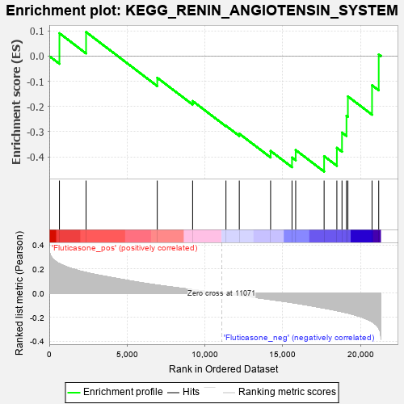
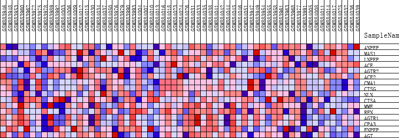
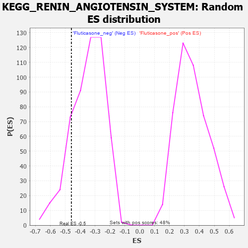

| | | Dataset | GSEA_expr_Flu.GSEA_timepoint.cls#Fluticasone |
| Phenotype | GSEA_timepoint.cls#Fluticasone |
| Upregulated in class | Fluticasone_neg |
| GeneSet | KEGG_RENIN_ANGIOTENSIN_SYSTEM |
| Enrichment Score (ES) | -0.45881546 |
| Normalized Enrichment Score (NES) | -1.3211842 |
| Nominal p-value | 0.16858238 |
| FDR q-value | 1.0 |
| FWER p-Value | 0.89 |
Table: GSEA Results Summary

Fig 1: Enrichment plot: KEGG_RENIN_ANGIOTENSIN_SYSTEM
Profile of the Running ES Score & Positions of GeneSet Members on the Rank Ordered List
| PROBE | DESCRIPTION
(from dataset) | GENE SYMBOL | GENE_TITLE | RANK IN GENE LIST | RANK METRIC SCORE | RUNNING ES | CORE ENRICHMENT | | 1 | ANPEP | NA | | | 651 | 0.245 | 0.0909 | No |
| 2 | MAS1 | NA | | | 2363 | 0.171 | 0.0956 | No |
| 3 | LNPEP | NA | | | 6936 | 0.067 | -0.0860 | No |
| 4 | ACE | NA | | | 9208 | 0.029 | -0.1785 | No |
| 5 | AGTR2 | NA | | | 11349 | -0.004 | -0.2769 | No |
| 6 | ACE2 | NA | | | 12206 | -0.018 | -0.3082 | No |
| 7 | CMA1 | NA | | | 14218 | -0.052 | -0.3769 | No |
| 8 | CTSG | NA | | | 15592 | -0.078 | -0.4028 | Yes |
| 9 | NLN | NA | | | 15829 | -0.082 | -0.3731 | Yes |
| 10 | CTSA | NA | | | 17655 | -0.124 | -0.3975 | Yes |
| 11 | MME | NA | | | 18474 | -0.144 | -0.3645 | Yes |
| 12 | REN | NA | | | 18804 | -0.153 | -0.3038 | Yes |
| 13 | AGTR1 | NA | | | 19091 | -0.162 | -0.2371 | Yes |
| 14 | CPA3 | NA | | | 19182 | -0.164 | -0.1600 | Yes |
| 15 | ENPEP | NA | | | 20734 | -0.236 | -0.1159 | Yes |
| 16 | AGT | NA | | | 21163 | -0.288 | 0.0067 | Yes |
Table: GSEA details [plain text format]

Fig 2: KEGG_RENIN_ANGIOTENSIN_SYSTEM
Blue-Pink O' Gram in the Space of the Analyzed GeneSet

Fig 3: KEGG_RENIN_ANGIOTENSIN_SYSTEM: Random ES distribution
Gene set null distribution of ES for KEGG_RENIN_ANGIOTENSIN_SYSTEM